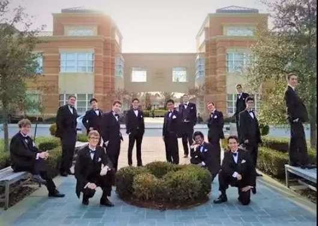

耶鲁大学阿卡贝拉“胡同猫”游古城
洛邑古城 2018年3月26日
近日，洛邑古城迎来了一群来自大洋彼岸的国际小伙伴——耶鲁大学阿卡贝拉组合“胡同猫”。

耶鲁大学阿卡贝拉组合“胡同猫”，是一支由15名在校本科大学男生组成的无伴奏歌唱团，创立于1943年，曾先后到伦敦、柏林、新加坡、马德里、巴黎等地演出，足迹遍布世界各地，受到社会各界人士的热烈欢迎。
2018年，阿卡贝拉“胡同猫”首次登陆洛阳，走进洛邑古城，感受博大精深的中国文化。
巍峨古塔、碧波新潭、飞檐楼阁，唐三彩、秦氏绢艺、牡丹瓷……古色古香的建筑群、丰富多彩的中国传统非遗项目，深厚的文化底蕴让阿卡贝拉组合的小伙伴们目不暇接、赞不绝口。
世界知名学府的才子们也被中国文化折服，围在文房四宝前迈不动步子，对柔软的毛笔写出的方块儿字惊叹不已，纷纷摩拳擦掌，跃跃欲试。
提悬顿转，起回落逆，虽然生涩，但提笔书写的汉字还真的挺像那么回事。
沉迷于泼墨挥毫不可自拔的国际小伙伴们，早已被中国汉字之美所征服。
游园中，新潭湖畔响起的美妙音乐激发了小伙伴们的创作灵感，一字排开，载歌载舞，迫不及待地展示自己的音乐才华。
艺术无国界，优秀的文化更不分民族。古城、古韵、异国歌声，中与西的美妙文化融合，让古城又添一道亮丽的风景。
pass先森友情出镜
https://v.qq.com/x/page/r1335drpwia.html
欢迎各国的友人来到洛阳，我们愿以深厚文化底蕴为依托，打造中原的渡口，让世界看到洛阳之美，让世界重回洛阳！